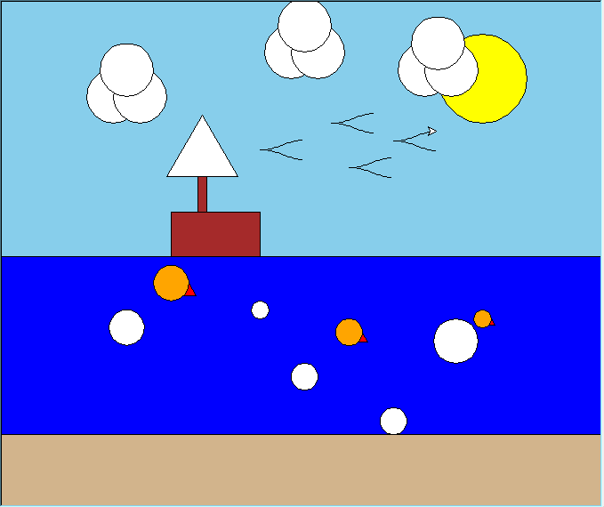

This project involved refactoring and enhancing a Turtle Graphics scene from a previous assignment to improve its structure, readability, and maintainability. By applying software engineering principles such as function decomposition, modular design, and code reuse, I reorganized the program into smaller, more focused functions and eliminated redundant code through generalized components. The refactored code made it easier to create and manage a more complex scene featuring multiple composite figures while demonstrating the benefits of reusable and well-structured code. Through this process, I strengthened my understanding of code organization, software design, and iterative development practices.
This series of functions creates a boat by arranging rectangles and triangles in a specific layout to form the hull, mast, and sail. The parameters allow for flexible positioning and scaling:
def draw_boat(t):
"""Draw a boat with hull, mast, and sail"""
# Draw boat hull
jump_to(t, -150, 50)
draw_rectangle(t, 100, 50, fill_color="brown")
# Draw mast
jump_to(t, -120, 150)
draw_rectangle(t, 10, 100, fill_color="brown")
# Draw sail
jump_to(t, -155, 90)
draw_triangle(t, 80, fill_color="white")
Here is the final beach scene! (and yes.. those orange circles are supposed to be fish...)

In this scene, the boat is positioned on the water with a bright sun overhead, clouds in the sky, and fish swimming nearby. The use of simple geometric shapes and colors creates a visually appealing composition while demonstrating the effectiveness of the refactored code in managing complex scenes.